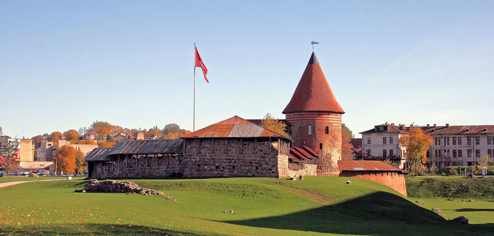

Kaunas – antrasis pagal dydį Lietuvos miestas šalies centrinėje dalyje, Nemuno ir Neries santakoje.
Svarbus pramonės, transporto, mokslo ir kultūros centras, Laikinoji sostinė.
Kauno miesto savivaldybės, Kauno rajono savivaldybės, arkivyskupijos centras.

Julius Tamašas